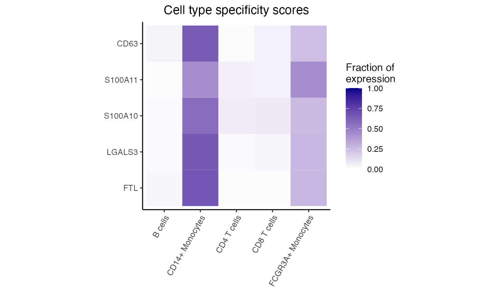
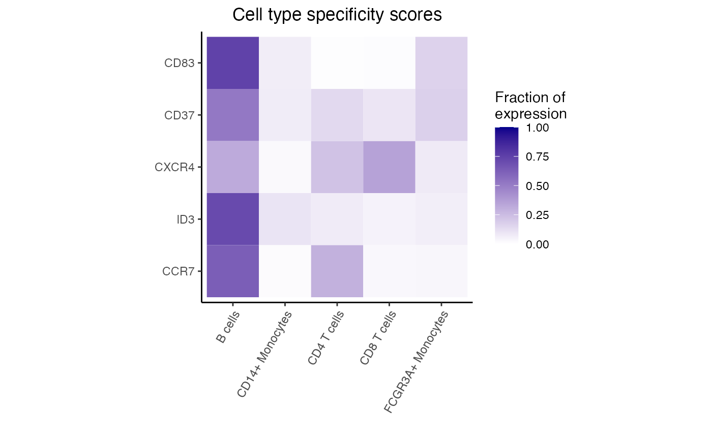
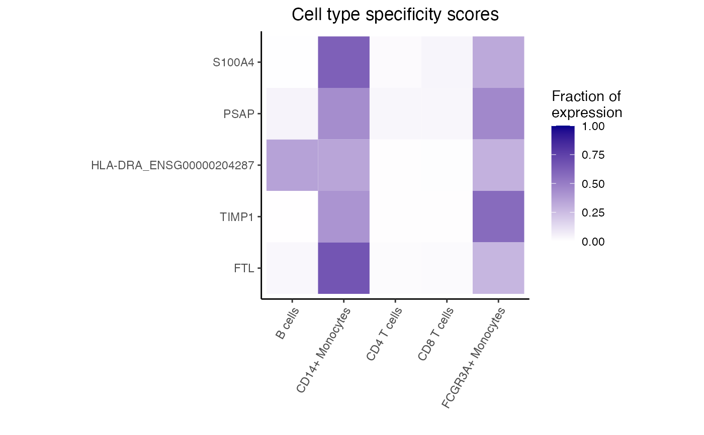

Differential expression between pair of assays
Source:R/dreamletCompareClusters.R
dreamletCompareClusters.RdPerform differential expression between a pair of assays using linear (mixed) models
Usage
dreamletCompareClusters(
pb,
assays,
method = c("fixed", "random", "none"),
formula = ~0,
collapse = TRUE,
min.cells = 10,
min.count = 10,
min.samples = 4,
isCounts = TRUE,
normalize.method = "TMM",
<<<<<<< HEAD
=======
useCountsWeights = TRUE,
>>>>>>> a2b5f071aa39d4fcc963cf98c450727ccecdb45e
robust = FALSE,
quiet = FALSE,
contrasts = c(compare = paste("cellClustertest - cellClusterbaseline")),
BPPARAM = SerialParam(),
errorsAsWarnings = FALSE,
...
)Arguments
- pb
pseudobulk data as SingleCellExperiment object
- assays
array of two entries specifying assays (i.e. cell clusters) to compare, or a list of two sets of assays.
- method
account for repeated measures from donors using a "random" effect, a "fixed" effect, or "none"
- formula
covariates to include in the analysis.
- collapse
if TRUE (default), combine all cell clusters within the test set, and separately the baseline set. If FALSE, estimate coefficient for each cell cluster and then identify differential expression using linear contrasts with
variancePartition::makeContrastsDream()- min.cells
minimum number of observed cells for a sample to be included in the analysis
- min.count
minimum number of reads for a gene to be consider expressed in a sample. Passed to
edgeR::filterByExpr- min.samples
minimum number of samples passing cutoffs for cell cluster to be retained
- isCounts
logical, indicating if data is raw counts
- normalize.method
normalization method to be used by
calcNormFactors
<<<<<<< HEAD
=======
- useCountsWeights
use cell count weights
>>>>>>> a2b5f071aa39d4fcc963cf98c450727ccecdb45e
- robust
logical, use eBayes method that is robust to outlier genes
- quiet
show messages
- contrasts
cell type is encoded in variable
cellClusterwith levelstestandbaseline.contrastsspecifies contrasts passed tovariancePartition::makeContrastsDream(). Note, advanced users only.- BPPARAM
parameters for parallel evaluation
- errorsAsWarnings
if
TRUE, convert error to a warning and returnNULL- ...
other arguments passed to
dream
Details
Analyze pseudobulk data to identify differential gene expression between two cell clusters or sets of clusters while modeling the cross-donor expression variation and other aspects of the study design.
dreamletCompareClusters() is useful for finding genes that are differentially expressed betweeen cell clusters and estimating their fold change. However, the p-values and number of differentially expressed genes are problematic for two reasons, so users must be careful not to overinterpret them:
Cell clusters are typically identified with the same gene expression data used for this differential expression analysis between clusters. The same data is used both for discovery and testing, and this means that the p-values from the differential expression analysis will not be uniform under the null. This will produce a lot of findings with small p-values even in the absence of true biological differences.
The
dreamletpackage is designed for large datasets with many subjects. The sample sizes from cohort studies are an order of magnitude larger than typical single cell studies. This means that these analyses have huge power to detect even subtle difference in expression between cell clusters. While cluster-specific marker genes are often discovered from an handful of samples, thedreamletpackage is applicable to 100s or 1000s of subjects.
method indicates the regression method used to test differential expression between sets of cell clusters. Since the same biosample will usually be represented in both sets of cell clusters, method determines how the paired design is modeled. For method = "mixed", the sample is modeled as a random effect: ~ (1|Sample) + .... For method = "fixed", the sample is modeled as a fixed effect: ~ Sample + .... For method = "none", the pairing is ignored.
When collapse=TRUE (default) combine all cell clusters within the test set, and separately the baseline set, and estimate a coefficient indicating the differential expression between sets for a given gene. If collapse=FALSE, estimate a coefficient for each cell type and then identify differential expression using linear contrasts with variancePartition::makeContrastsDream().
Examples
library(muscat)
library(SingleCellExperiment)
data(example_sce)
# create pseudobulk for each sample and cell cluster
pb <- aggregateToPseudoBulk(example_sce,
assay = "counts",
cluster_id = "cluster_id",
sample_id = "sample_id",
verbose = FALSE
)
# Evaluate the specificity of each gene for each cluster
df_cts <- cellTypeSpecificity(pb)
<<<<<<< HEAD
#> Warning: useNames = NA is deprecated. Instead, specify either useNames = TRUE or useNames = TRUE.
=======
>>>>>>> a2b5f071aa39d4fcc963cf98c450727ccecdb45e
# compare first two assays (i.e. cell types)
ct.pairs <- c("B cells", "CD14+ Monocytes")
# run comparison
# use method = 'fixed' here since it is faster
fit <- dreamletCompareClusters(pb, ct.pairs, method = "fixed")
#> Initial filtering...
#> Filtering for paired samples...
# Extract top 10 differentially expressed genes
# The coefficient 'compare' is the value logFC between test and baseline:
# compare = cellClustertest - cellClusterbaseline
res <- topTable(fit, coef = "compare", number = 10)
# genes with highest logFC are most highly expressed in
# B cells compared to CD14+ Monocytes
head(res)
#> logFC AveExpr t P.Value adj.P.Val B
#> FTL -4.559570 14.265849 -24.93241 4.100814e-11 1.394120e-08 16.14202
#> LGALS3 -4.815545 9.879829 -24.76997 4.404803e-11 1.394120e-08 15.89842
#> S100A10 -4.551858 9.950588 -21.69418 1.871963e-10 3.822981e-08 14.56393
#> S100A11 -4.687559 10.362616 -21.19151 2.415786e-10 3.822981e-08 14.33464
#> CD63 -3.892389 10.337664 -20.05814 4.388171e-10 5.555424e-08 13.77198
#> ANXA5 -3.674191 10.097965 -19.29905 6.665193e-10 7.031778e-08 13.35939
dreamlet::plotHeatmap(df_cts, genes = rownames(res)[1:5])
<<<<<<< HEAD
#> Scale for fill is already present.
#> Adding another scale for fill, which will replace the existing scale.
=======
>>>>>>> a2b5f071aa39d4fcc963cf98c450727ccecdb45e

# compare B cells versus the rest of the cell types
# 'rest' is a keyword indicating all other assays
fit <- dreamletCompareClusters(pb, c("B cells", "rest"), method = "fixed")
#> Initial filtering...
#> Filtering for paired samples...
res <- topTable(fit, coef = "compare", number = 10)
# genes with highest logFC are most highly expressed in
# B cells compared to all others
head(res)
#> logFC AveExpr t P.Value adj.P.Val B
#> FTL -3.600925 13.872811 -33.28366 1.901955e-15 1.690838e-12 25.84574
#> FTH1 -2.466503 15.497594 -28.32886 2.047580e-14 8.003456e-12 23.27441
#> ANXA1 -5.766836 8.777334 -27.80028 2.700829e-14 8.003456e-12 22.77952
#> LGALS3 -3.906317 9.492690 -21.89782 8.854358e-13 1.820012e-10 19.63566
#> S100A11 -4.195517 10.182616 -21.68039 1.023629e-12 1.820012e-10 19.53932
#> S100A10 -3.753134 9.613494 -20.50358 2.299888e-12 3.407668e-10 18.72582
# Get genes upregulated in B cells
idx <- with(res, which(logFC > 0))[1:5]
dreamlet::plotHeatmap(df_cts, genes = rownames(res)[idx])
<<<<<<< HEAD
#> Scale for fill is already present.
#> Adding another scale for fill, which will replace the existing scale.
=======
>>>>>>> a2b5f071aa39d4fcc963cf98c450727ccecdb45e

lst <- list(
test = c("CD14+ Monocytes", "FCGR3A+ Monocytes"),
baseline = c("CD4 T cells", "CD8 T cells")
)
# compare 2 monocyte clusters to two T cell clusters
fit <- dreamletCompareClusters(pb, lst, method = "fixed")
#> Initial filtering...
#> Filtering for paired samples...
res <- topTable(fit, coef = "compare", number = 10)
# genes with highest logFC are most highly expressed in
# monocytes compared to T cells
head(res)
#> logFC AveExpr t P.Value adj.P.Val
#> FTL 5.195892 13.603905 53.09308 1.337149e-12 1.159308e-09
#> TIMP1 6.214741 11.076844 41.00811 1.371256e-11 5.944395e-09
#> HLA-DRA_ENSG00000204287 5.674527 9.655697 32.33465 1.161417e-10 3.356496e-08
#> S100A4 4.514156 9.249845 28.04576 4.159764e-10 7.937568e-08
#> PSAP 3.948238 9.342828 27.30755 5.281552e-10 7.937568e-08
#> LGALS1 4.544995 9.290447 27.18795 5.493127e-10 7.937568e-08
#> B
#> FTL 19.61451
#> TIMP1 17.20190
#> HLA-DRA_ENSG00000204287 15.06115
#> S100A4 13.95058
#> PSAP 13.73411
#> LGALS1 13.66478
# Get genes upregulated in monocytes
idx <- with(res, which(logFC > 0))[1:5]
dreamlet::plotHeatmap(df_cts, genes = rownames(res)[idx])
<<<<<<< HEAD
#> Scale for fill is already present.
#> Adding another scale for fill, which will replace the existing scale.
=======
>>>>>>> a2b5f071aa39d4fcc963cf98c450727ccecdb45e
